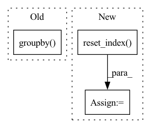

Pattern ID :17774
Before Change
result[["name-string", "name-string_x_std"]]
.drop_duplicates()
.sort_values("name-string")["name-string_x_std"],
df0.groupby( "name-string") .agg({"x": "std"})["x"],
check_index=False,
check_names=False,
)After Change
// Check results. Need to sort for direct comparison
expect = df0.sort_values(["label", "x", "y", "id"]).reset_index(drop=True).reset_index()
got = result.sort_values(["label", "x", "y", "id"]).reset_index(drop=True) .reset_index()
gb_e = expect.groupby("name-cat").aggregate({"name-cat": "count", "x": ["sum", "min", "std"]})
gb_e.columns = ["count", "sum", "min", "std"]
df_check = got.merge(gb_e, left_on="name-cat", right_index=True, how="left")In pattern: SUPERPATTERN
Frequency: 3
Non-data size: 3
Instances Fragment ID: 58526397
Project Name: nvidia/nvtabular
Commit Name: 8cb492e153ceb0bb56d95a311e43b9f30f39a7b1
Time: 2021-02-08
Author: rzamora217@gmail.com
File Name: tests/unit/test_dask_nvt.py
M Class Name: AnonimousClass
N Class Name: AnonimousClass
M Method Name: test_dask_groupby_stats(4)
N Method Name: test_dask_groupby_stats(4)
M Parent Class:
N Parent Class:
M File Name: tests/unit/test_dask_nvt.py
N File Name: tests/unit/test_dask_nvt.py
M Start Line: 135
M End Line: 185
N Start Line: 130
N End Line: 160
Before Change
def generate_order(stock: str, start_idx: int, end_idx: int) -> None:
df = pd.read_pickle(DATA_PATH / f"{stock}.pkl")
df = df.groupby("date").take(range(start_idx, end_idx)).droplevel(level=0)
div = df["$volume0"].rolling((end_idx - start_idx) * 60).mean().shift(1).groupby(level="date") .transform("first")
order_all = pd.DataFrame(df.groupby(level=(2, 0)).mean().dropna())
order_all["amount"] = np.random.lognormal(-3.28, 1.14) * order_all["$volume0"]After Change
def generate_order(stock: str, start_idx: int, end_idx: int) -> bool:
dataset = pd.read_pickle(DATA_PATH / f"{stock}.pkl")
df = dataset.handler.fetch(level=None).reset_index()
if len(df) == 0 or df.isnull().values.any() or min(df["$volume0"]) < 1e-5:
return False
df["date"] = df["datetime"].dt.date.astype("datetime64") Fragment ID: 58526413
Project Name: microsoft/qlib
Commit Name: 7f1e8c52063e92cfcd11228255c2a0cb44798a90
Time: 2023-04-26
Author: huoranli@microsoft.com
File Name: examples/rl_order_execution/scripts/gen_training_orders.py
M Class Name: AnonimousClass
N Class Name: AnonimousClass
M Method Name: generate_order(3)
N Method Name: generate_order(3)
M Parent Class:
N Parent Class:
M File Name: examples/rl_order_execution/scripts/gen_training_orders.py
N File Name: examples/rl_order_execution/scripts/gen_training_orders.py
M Start Line: 15
M End Line: 17
N Start Line: 15
N End Line: 40
Before Change
// Check category counts
cat_expect = df0.groupby("name-string").agg({"name-string": "count"}).reset_index(drop=True)
cat_result = (
result.groupby( "name-string") .agg({"name-string": "count"}).reset_index(drop=True)
)
if freq_threshold:
cat_expect = cat_expect[cat_expect["name-string"] >= freq_threshold]After Change
// Check categories. Need to sort first to make sure we are comparing
// "apples to apples"
expect = df0.sort_values(["label", "x", "y", "id"]).reset_index(drop=True).reset_index()
got = result.sort_values(["label", "x", "y", "id"]).reset_index(drop=True).reset_index()
dfm = expect.merge(got, on="index", how="inner")[["name-string_x", "name-string_y"]]
dfm_gb = dfm.groupby(["name-string_x", "name-string_y"]).agg(
{"name-string_x": "count", "name-string_y": "count"}
)
if freq_threshold:
dfm_gb = dfm_gb[dfm_gb["name-string_x"] >= freq_threshold]
assert_eq(dfm_gb["name-string_x"], dfm_gb["name-string_y"], check_names=False)
// Read back from disk Fragment ID: 58526389
Project Name: nvidia/nvtabular
Commit Name: 8cb492e153ceb0bb56d95a311e43b9f30f39a7b1
Time: 2021-02-08
Author: rzamora217@gmail.com
File Name: tests/unit/test_dask_nvt.py
M Class Name: AnonimousClass
N Class Name: AnonimousClass
M Method Name: test_dask_workflow_api_dlrm(9)
N Method Name: test_dask_workflow_api_dlrm(9)
M Parent Class:
N Parent Class:
M File Name: tests/unit/test_dask_nvt.py
N File Name: tests/unit/test_dask_nvt.py
M Start Line: 65
M End Line: 127
N Start Line: 55
N End Line: 122